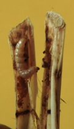
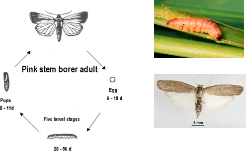

| Home |
| MAIZE |
| 1. Maize Shoot fly |
| 2. Stem Borer |
| 3. Pink Stem Borer |
| 4. Corn worm / Ear worm |
| 5. web worm |
| 6. aphid |
| 7. shoot bug |
| 8. climbing cut worm |
| 9. ash weevil |
| 10. phadka grasshopper |
| 11. leafhopper |
| questions |
| download notes |
PESTS OF MAIZE :: Major Pests :: Pink Stem Borer
3. Pink stem borer: Sesamia inferens (Noctuidae: Lepidoptera)
Distribution and status:
India, Pakistan, Malaysia, Taiwan, Burma, Bangladesh, Sri Lanka, South East Asia, China, Korea, Japan and Indonesia.
Damage symptoms: Pink larva enters into the stem causing dead heart symptom similar to that of stem borer.
|
 |
|  | Bionomics: The adult moth is straw-coloured with white wings. The larva is pinkish brown with dark head. The life cycle is completed in 45-75 days. There are 4-6 generations per year.
Management
|